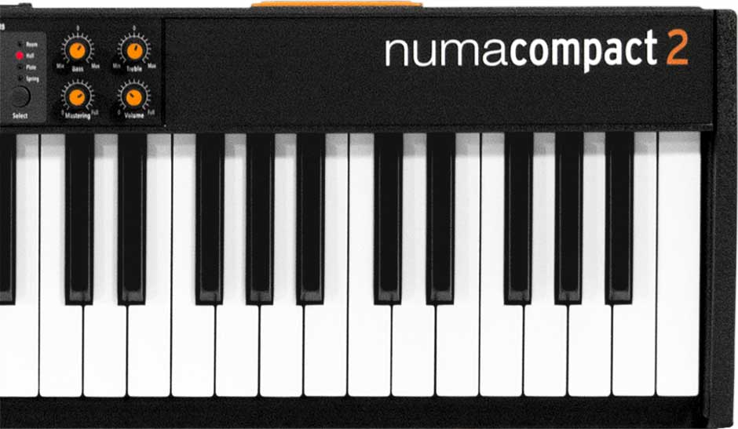
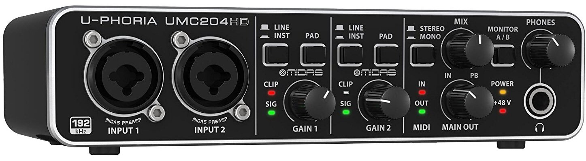

Moje vybavení |
|||
|---|---|---|---|
| DAW | FL Studio 20 Producer Edition |  |
4 790 Kč |
| Sluchátka | Beyerdynamic DTX 910 | 1 390 Kč | |
| Keyboard | Studiologic Numa Compact 2 |  | 11 390 Kč |
| Zvukový převodník | Behringer U-Phoria UMC204HD |  | 2 290 Kč |
| Mikrofon | Shure SM58-LCE | 2 690 Kč |